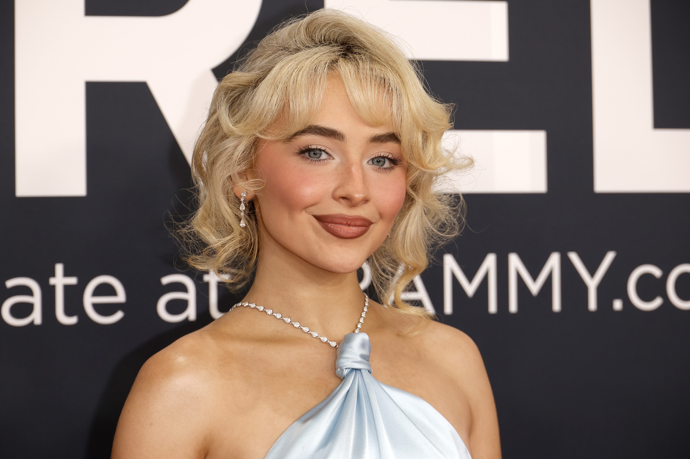

Sabrina Annlynn Carpenter (born May 11, 1999) is an American singer, songwriter, and actress. She first gained prominence starring as Maya Hart on the Disney Channel series Girl Meets World (2014–2017). She signed with the Disney-owned Hollywood Records and achieved limited success with studio albums Eyes Wide Open (2015), Evolution (2016), Singular: Act I (2018), and Singular: Act II (2019).